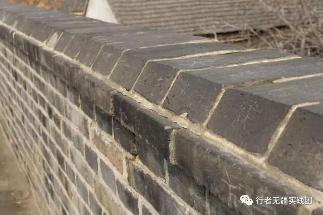
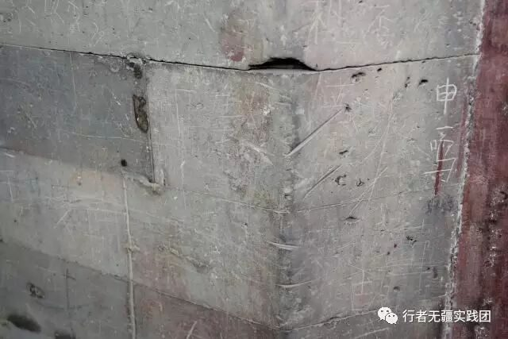

来自行者的第三封信|传承
传承
文：巴雅琪
初到济南，一股熟悉而又亲切的气息扑面而来，回家了。
怀着回到家的兴奋，稍作整顿之后，我们开始了我们的文化之旅。
两天的济南行，我们走过山大校园，看过泉城公园、泉城广场，游过大明湖，听过耄耋老人的谆谆教诲，虽没能爬过千佛山，但也是感触良多。

而我印象最深的，还是在趵突泉偶遇的那位老人。
老人的出场方式尤为特别，当时我们正在李清照纪念堂里的小亭子休息，他大声吟咏着李清照的词从我们身边经过，我们“面面相觑”，决定采访这位老人。
老人八十多岁了，看起来却像六十几岁。他说他每天要逛三遍趵突泉，他说他最热爱的是文学，他会背李清照的所有词，他说他小学四年级毕业，他现在所掌握的东西全是他自己学的，他和我们讲了趵突泉的发展，讲了发展中的趣事，讲了发展过程中的障碍，讲了相关政治问题并延伸到了国家政治，讲了相关文化并提出了对我们当代大学生的期望——“学无止境，气有浩然”，以及“做时代的领头人”。
泰安行途中也遇到了一位老人，他虽没有文化，却能随口就是一个顺口溜。“双龙池，石牌坊，遥参亭亦逛逛，岱庙更是不虚传，全像一个大花坛……”，几句话便把岱庙的景点按顺序都概括了下来，让我们这些小辈听得那是一个佩服。
曲阜行，我们请了一位导游带领我们领略三孔的文化，收获更是深。
这几日的文化调研，让我对山东文化有了深一层的了解，但我感触更深的是文化的传承。
没上过几天学的老人们所了解的文化和我们这些上了十三四年学所了解的文化相差颇深。他们虽没上过学，但提及当地文化，个个都能侃侃而谈。而我们上了十几年的学，连刻在墙上的李清照的词都念不下来。这仅仅是年龄差距的问题吗？显然不是。是观念的问题，是思想的问题。从思想上就从未重视，从何来传承文化呢？
由思想到行为。五天的文化之旅，我们走过十几处景点，而几乎每处景点都能见到“xxx到此一游”的字样，不仅有中文，还有韩文。让我最震撼的就是岱庙的那座城墙，竟然每一块砖上都有字迹。中国人不文明旅游现象已闻名世界，虽近几年或许有所改善，但那些刻在砖石上的字迹却永远无法抹去。



中华民族五千年文化还能经得起多久的糟蹋？
望待民族觉醒时为时未晚。